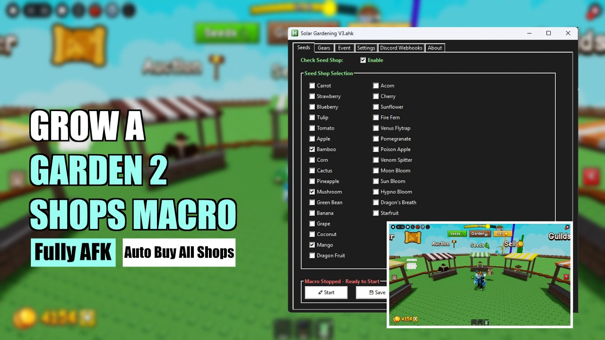

Advanced Roblox Grow A Garden 2 macro powered by computer vision. Hands-free Gardening with near-zero setup, adaptive rod support, and 100% transparent open-source code.
Download Solar Gardening, an advanced Grow A Garden 2 macro featuring full Garden Horizons automation and auto-reconnect. Super simple setup - download the macro, follow on-screen instructions, run it, and start Gardening.
🔎 Fully transparent: The complete source code is available on GitHub for anyone who wants to review how it works.

Solar Gardening is an advanced automation macro for Garden Horizons designed to simplify and enhance the Roblox Grow A Garden 2 experience.
🚀 Downloading and using Solar Gardening is straightforward.
Step 1: Download Solar Automate if you're on macOS or Linux, if you're on Windows download AutoHotKey.
Step 2: Double click on the Solar Gardening AHK file to run.
Step 3: Select your seeds and gears, and change the macro speed.
That's it! Solar Gardening will work perfectly.
✅ Supports Windows 10/11 • macOS • Linux • Works with all rods • Auto-updates available